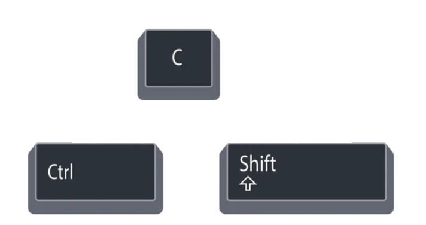

Introducción a la programación informática | Introduction to programming
Roguh
2021.11.24
Intro
Intro
- Mexicano, DACA
- Santa Fe, NM
- ciencias de la computación y matemáticas | computer science and math, New Mexico Tech, 2018
- Triplebyte empresa de reclutamiento | recruitment company
- healthcare startups
- a startup is a company that is just starting and could be getting investment funding
- un startup es una empresa que recién está comenzando y que podría obtener financiación para inversiones
- renewable energy company building software for controlling electric vehicle charging stations
- software para controlar cargadores de vehículos eléctricos
- PowerFlex
What to Expect
- 12 + 1 programas | programs
- Python ejercicios | exercises on Chromebook
What is programming, really?
youtu.be/Ct-lOOUqmyY
What is programming, really?
Computers:
- Rápidas | Fast
- Tontas | Very dumb
- Flexible | Very flexible. Programmable
- Toma las cosas literalmente | Takes instructions very literally, has special powers.
Que pueden hacer? What can they do?
- controlar la tecnología
- controlling technology (a LOT of technology?)
- automating tasks: computers can do the boring things quickly
- analyzing data and discovering new insights
- all forms of science: biology, medicine, physics, rocket science, mathematics
- improve communication, access to knowledge
- organizando información
- organizing information. uses many fascinating branches of mathematics
- make new forms of art
- improving existing industries (healthcare, electric vehicle charging, …)
- out-competing existing businesses
Visit
repl.it/languages/python3
- REPL: Read, Evaluate, Print, Loop
- Lee | Read: you type in code, the computer reads it
- Evalúa | Evaluate: the computer runs the code
- Computes, thinks, translates, acts, does what you told it to do
- Imprime | Print: the computer prints the results
- Repite | Loop: repeats, this same thing happens all over again
Program 1
name = "Alice"
message = "Hello," + name
print(message)
nombre = "Alice"
mensaje = "Hola" + nombre
print(mensaje)
Que va a hacer?
What will it do?
print quiere decir imprimir
Program 1: output
name = "Alice"
message = "Hello," + name
print(message)
nombre = "Alice"
mensaje = "Hola" + nombre
print(mensaje)
Output
Hello,Alice
HolaAlice
Program 1.1
name = "Alice"
message = "Hello, " + name
print(message)
nombre = "Alice"
mensaje = "Hola " + nombre
print(mensaje)
Output
Hello, Alice
Hola Alice
What is a programming language for?
para expresar un conjunto de instrucciones detalladas para una computadora digital
for expressing a set of detailed instructions for a digital computer
Read more here
Python

Fácil de aprender, comúnmente utilizado por científicos y empresas.
Easy to learn, commonly used by scientist and companies.
Uses?
- SciPy, Numpy, Pandas
- los científicos y matemáticos los utilizan para procesar todo tipo de datos.
- scientists and mathematicians use these to process all kinds of data.
- Tensorflow
- Populares libraries de aprendizaje automático. Redes neuronales, inteligencia artificial.
- Popular machine learning libraries. Neural networks, artificial intelligence.
- Flask and Django
- servidor web | web servers
- Mi trabajo: controlar la velocidad (los amperios) a la que se cargan los vehículos eléctricos.
- My work: controlling how fast (the amps) electric vehicles charge.
In general:
- Escribir programas rápidamente | Writing programs quickly. Practicar | Practicing.
- Aprender | Learning.
Program 1.2
nombre = "Alice"
print("Hello, " + nombre + "!")
Program 1.2: output
nombre = "Alice"
print("Hello, " + nombre + "!")
Output
Hello, Alice!
Program 2: Two variables
nombre = "Zach"
saludo = "Goodbye"
print(saludo + nombre)
Exercise: ABBA
first = "a"
second = "b"
print(<YOUR CODE HERE>)
Debería imprimir | It should print:
abba
CodingBat!
codingbat.com -> Python -> String-1 -> make_abba
codingbat.com/prob/p182144
To do more coding bat you’ll need to learn about list/string slices and other Python concepts…
Program 3: Arithmetic and Numbers
print(1 + 2 * 4 - 10 / 2)
print(2 ** 10)
print(195.51 // 10)
Program 3.1: A googol, notación científica | scientific notation
print(10 ** 100)
print(1e100)
5e23 == 5 * 10 ** 233.95e-5 == 3.95 * 10 ** (-5)^ has a different meaning in Python.
142 ^ 51 != 142 ** 51 (NO SON IGUAL | NOT EQUAL)
Program 4: More math and modules/libraries
import math
radius = 145
print(math.pi * radius ** 2)
Exercise: calcule el volumen de un cubo | compute the volume of a cube
user_input = <YOUR CODE HERE>
side_length = float(user_input)
print(<YOUR CODE HERE>)

Exercise: calcule el volumen de un cubo | compute the volume of a cube
user_input = <YOUR CODE HERE>
side_length = float(user_input)
print(<YOUR CODE HERE>)
- ¿Cómo obtener información?
- How to get the side length?
- ¿Cómo calcular el volumen de un cubo?
- How to compute the volume of a cube?
E/S | I/O
- Entrada or ingresar de información | Input. Receive information from the world.
- Keyboard, touch screen
- Hard drives, SSDs, RAM, memory
- Network (other computers)
- GPS, thermometers, other special hardware
- Salida de información | Output. Deliver information to the world.
- Screens
- Printers
- Hard drives, SSDs, RAM, memory
- Network (other computers)
- How fast a rocket should go, other special hardware
Periférico de entrada
Input/Output
Program 6: Dibuja con una tortuga | Drawing with Turtle
import turtle
turtle.forward(100)
turtle.color("red")
turtle.left(90)
turtle.forward(50)
Program 7: Escalones | Stairs
turtle.forward(100)
turtle.left(90)
turtle.forward(100)
turtle.right(90)
turtle.forward(100)
turtle.left(90)
turtle.forward(100)
turtle.right(90)
turtle.forward(100)
turtle.left(90)
turtle.forward(100)
turtle.right(90)
Program 8: Iteración | For loops (AKA iteration)
import turtle
for color in ['red', 'green', 'orange', 'blue']:
turtle.color(color)
turtle.forward(75)
turtle.left(90)
Program 8.1: Escalones v2 | Stairs v2
Version 2
import turtle
for stair_count in range(40)
turtle.forward(10)
turtle.left(90)
turtle.forward(10)
turtle.right(90)
Program 8.2: Escalones de colores
import turtle
colors = ["red", "orange", "green", "blue", "purple"]
for stair_count in range(40):
# Pick a color
turtle.color(colors[stair_count % len(colors])
# Draw 1 stair
turtle.forward(10)
turtle.left(90)
turtle.forward(10)
turtle.right(90)
Exercise: Dibuja un cuadrado | Draw a square
import turtle
side_length = 100
<YOUR CODE HERE>
Exercise: Dibuja un cuadrado junto a un triángulo | Draw a square next to a triangle
import turtle
side_length = 100
<YOUR CODE HERE>
Trick: Speedup turtle when drawing complex things
turtle.tracer(False) # Esconde | Hide the turtle until it's done
turtle.update() # Enseñar | Show what the turtle drew
Squares
import turtlae
turtle.speed("fastest")
for square_number in range(35):
turtle.left(10)
for _ in range(4):
turtle.forward(200)
turtle.left(90)
triangles? octagons?
Advanced program: Recursividad | Recursion
import turtle
def koch_line(width, depth=0):
if depth <= 0:
turtle.forward(width)
else:
koch_line(width / 3, depth - 1)
turtle.left(60)
koch_line(width / 3, depth - 1)
turtle.right(2 * 60)
koch_line(width / 3, depth - 1)
turtle.left(60)
koch_line(width / 3, depth - 1)
def koch_snowflake(width=100, depth=1):
for _ in range(3):
koch_line(width, depth)
turtle.right(180 - 60)
turtle.speed('fastest')
koch_snowflake(200, 3)
turtle.done()
- functions
- recursive functions
- more for loops
- if-statements
number1 <= number2- function arguments with default values
Program 11: HTTP solicitudes | requests with requests library
import urllib
base_url = 'https://www.google.com/search?q='
query = urllib.parse.quote_plus('equipo academy')
response = requests.get(base_url + query)
print(response.status_code)
print(response.text)
response.status_code 200 is ok.
response.status_code ≥400 is error
Status codes
A warning!
La versión 2 de Python es muy antigua y ya no recibe actualizaciones.
Python version 2 is very old and no longer maintained.
Find newer resources!
Maintaining software
Receiving updates. Taking care of security problems.
A good sign
$ python --version
Python 3.9.7
>>> import sys
>>> sys.version
'3.9.7 (default, Oct 10 2021, 15:13:22) \n[GCC 11.1.0]'
A list of Python features
- type hints
- builtin list, dict, set
- list comprehensions
- dict comprehensions
for i, e in enumerate(collection)- OOP
- setup.py and source code in src/PACKAGENAME
- pydocstyle and pylint for linting
- black and isort for formatting (PEP 8)
- bandit and safety for security scanning
- builtin json library
- builtin enum library
- builtin unittest library
- builtin re library
- builtin copy library
- builtin random library
- builtin math library
- builtin datetime library
- builtin pprint library
- builtin itertools library (count)
- builtin collections library (defaultdict)
- builtin argparse library
- pytest for running tests and getting nice output
- pydantic for validation with nice error messages and a type-base interface
- cerberus for validation (being phased out)
- config in environment variables https://12factor.net/
- pdb for debugging
- docstrings for documentation
__str__ method for string representation- type hints (need an extra tool to actually typecheck), builtin typing library
-1 as a list index- f-strings for interpolation
b"binary data" for bytesstr.joinfloat('inf') for infinity- keyword arguments
- keyword arguments from a dict
Some computer science and programming topics
- Linux: install it on a laptop
- Types
- Algorithms: Sorting, image processing
- Data structures: lists, trees, searching for words quickly, organize data
- Databases
- HTTP
- HTML and CSS
- Docker, Kubernetes
My computer
- Manjaro Linux (based off Arch Linux)
- i3 window manager
- neovim with lots of plugins
- ASDF for installing Python, can also use PyEnv or Anaconda
- Firefox
- Slack, Teams, Outlook for work
Android
- a type of Linux!
- Try installing F-Droid to install Termux to try out Linux
- You can also install Termux on some Chromebooks
- You can run Python on Termux
- To make Android apps, you need to use Java or Kotlin and the Android Studio
Recommended resources:
Todos usan estos recursos, incluso los profesionales:
Everyone uses these, even professionals:
Gratis:
Free:
Necesitan dinero:
Money:
Learning resources
Todo lo que necesitas es una computadora y tiempo.
All you need is a computer and time.
- self-teaching is common and feasible thanks to open-source
- the “real world” tools are freely available!
- the state of the art tools are sometimes freely available too!
- so are often-official tutorials and documentation
También puedes comenzar con JavaScript | You can also start with JavaScript
Se utiliza para crear sitios web y servidores web.
It is used to make websites and web servers.
Installing JavaScript
- Ya lo tienes
- You already have it!
- Press Ctrl+Shift+C on your web browser
- More advanced: install TypeScript, npm or yarn, node

Program 12: JavaScript
let user_input = prompt("Enter the size of a square")
let number = Number(user_input)
let area = number * number
console.log("The area is " + area)
Projects
Encuentra un proyecto que te apasione.
Find a project you’re passionate about.
- a cooking tool
- a video game
- an AI
- a website, add JavaScript
- an app
- a scientific experiment
- faster, lots of users, different scenarios
- scrape a website: youtube downloader, instagram downloader, wikipedia
reddit.com/r/dailyprogrammer/
Aprende a aprender
Ser un autodidacta te ayudara
Learn to teach yourself
This will help you in college and in any other opportunities you may take.
As a professional, I have to learn new technologies every few years.
How to learn more
- a group
- a group online
- university degree
- bootcamps
- internships
- work experience
Other programming languages
- TypeScript: JavaScript with more reliability
- Python with type hints: like TypeScript
- Rust: Very advanced, very fast, very reliable
- Hardware control, web servers
- Go: Not as advanced, very fast, very reliable
- C++, C: Very advanced, very fast, not so reliable. Can make Python code faster.
- Videogames, multimedia, hardware control, operating systems, Python itself
- Java
- Android apps (Also see Kotlin)
- Haskell, OCaml: Functional programming. OCaml is faster, Haskell has more interesting features.
Advice
How I would learn to code (if I could start over)
explore outside of school and assignments! explore a lot!
go through basics quickly, a few hours a day.
- don’t get stuck on the details or take a ton of notes on syntax
- just focus on understanding and trying things out
when you’re ready, do some of your own projects
- passion projects: interesting/useful
- start small
- don’t be afraid to do something has already done!
just don’t copy code without understanding. you won’t learn!
try a bunch of things with your code!
- reveal new things you can learn
learn how to get unstuck
- EVERYONE gets stuck
- everyone uses stackoverflow.com
read read read read read read read read read read read read read read read read read read read read
be ok with not knowing things
even for good programmers, writing code without errors is rare
find a community or get a job/internship!!! try very hard to do this
everyone always must learn!
- always update, always new details to learn, always can go deeper